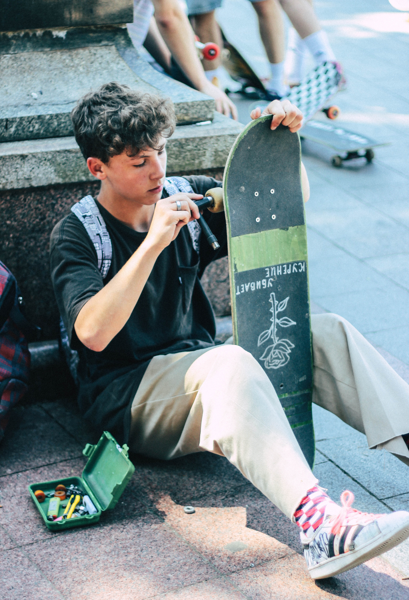

We do custom griptape art for any shape of board you like to ride. What is custom grip tape? Its when someone draws designs or cuts out different grip shapes to make a cool image on top of a skateboard. Our brand likes to accomadate our customers by allowing a 15% discount on their first purchase. It can be any grip material of your choosing such as Mob and Jessup. The pens we use are oil based but if you're wanting something quicker we also do prints as well. Once you've selected the size of grip and image, it will take us a couple of days to a week to send it out to you.
Our mission is to allow every skateboarder to not just be creative with their tricks but also with the grip tape they're riding on. We want to build a community that feels confident and excited about their new grip art purchase. Our vision is to send art to skaters all around the country who share a love for skateboarding that is equal to our company. If there are any problems with your purchase email us as soon as possible and we will help to the best of our abilities.
yocaher skateboards© 2023 Hello World/Intro to HTML